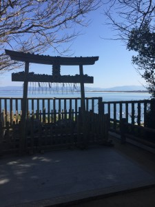
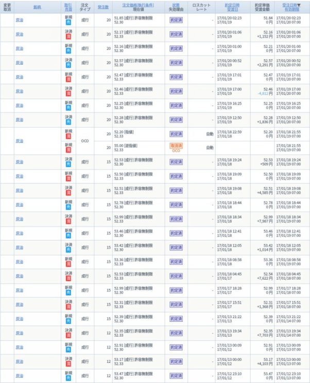

| 【Endless Challenge】 大人になっても夢は叶う 『小ヤジの個力未来開拓』２０１７年１月刊増刊号: 『小ヤジの個力未来開拓では物販、情報発信、アフィリエイト、投資などインターネットを利用して『個の力』で稼ぐ為の有益な情報を発信しております。 | |
| 小ヤジ | |
| KOYAJI (2017) | |
『小ヤジの個力未来開拓』２０１７年１月刊増刊号
【Endless Challenge】
大人になっても夢は叶う
「個で稼ぐ力を身につけて自分の未来を切り開け」というテーマを元に日刊メールマガジンを配信していますが、こちらはその月刊増刊号になります。
『小ヤジの個力未来開拓では物販、情報発信、アフィリエイト、投資などインターネットを利用して『個の力』で稼ぐ為の有益な情報を発信しております。
★好きな言葉
「年輪成長」
選択した道を正解にする事を心がける。
それを正解にするかどうかは
自分自身でしかない。
自分の努力で正解にする。
自分を信じて行動する。
★理念
己の才覚・技能・経験・知識などの
「自分の武器」を世の中に役立せ、
提供し、己成長させる」
★LINE＠でも有益な情報を配信中！
登録はこちらから
↓↓↓
スマホから今アクセスしている方はこちらのリンクから登録！
→ http://line.me/ti/p/@cjm7335q
PCの方は「@cjm7335q」で検索を！
やべ〜な、やべ〜な、ユニクロやべ〜な！
何がヤバイかって商品開発を従来の１年から２週間に短縮するらしい。
こんな事が可能なのか！？
僕がアパレル商社にいた１０年前には考えられない。
それ位にマジですごい事。
IＴを駆使してAIとビッグデータを活用して顧客の要望に迅速に対応した商品供給態勢にするらしい。
なんかマジですげ〜時代になってきている。
「AI」×「ビッグデータ」で今後さまざまば業界で革命が起きるよね。
こんなおもしろい時代に生まれてこれて感謝ですね。
時代の流れは益々スピードを増してきている。
油断してたら「あっ」っという間においていかれるな〜。
前回の記事 「情報発信で行動範囲を拡大中！」 内で予告した通りに志賀島に行ってきましたよ〜。
博多に教え子に会いにいったついでに、博多から車で５０分位のところにある小さな島です。
島を車で一周してきましたがその時間なんと２０分・・・。
みじかっつ！
ちなみに信号は１つもありません。
波乗りは厳しそうですね。
潮の満ち引きで休暇村前はひょっとしたらいけそうな感じです。
台風スウェルが入ればいい感じだと思うけどどうなんだろ！？
他の場所はゴロゴリのリーフで波乗りは不可ですね。
志賀島にいったついでにちょっとググッていくつか観光してきました。
志賀海神社っていうのがあるんですがかなり神秘的で少し癒やされました。

潮見公園博多駅から１時間もかからないところにあんな島があるなんてうらやましい！
博多駅から１時間もかからないところにあんな島があるなんてうらやましい！
海も綺麗だし！
お昼は島入り口付近にある中西食堂のさざえ丼を食べてフィニッシュ！
旅先でカーシェアを取り入れた事で今まで行けなかったところも気軽にいけるようになった。
これから旅がまた一段と楽しくなりそうだ。
たまにはこんなゆる〜い感じの記事もありだな〜なんて思ったりしています。
昨日の記事へのアクセスはいつもの倍ありました。
すごいな・・・。
まだ見ていない方は是非こちらからどうぞ。
今日は教え子に会いに福岡県の博多にきています。
ラーメン好きの僕としては萌えてます。
博多のラーメン屋ってどこもめちゃ旨いっていうじゃないですか。
本当なのかな〜。
今回は以前にメルマガで「福岡に行くので誰かお茶しませんか〜！？」って発信したところ数名が反応してくれました。
あざす。
今回の旅はどんな出会いが待っているのか楽しみです。
全国各地に行く機会のキッカケになり、いろんな人に会えて、おいしいモノを食べ歩いて・・・。
情報発信していなかったらこんな事は起きていなかったと思うと情報発信のすごさを改めて感じています。
英語で情報発信したら世界中に友達ができるな〜。
情報発信の可能性ってすごいですね。
個人が「個のメディア」として世界に発信できる、萌えるわ〜！
せっかく福岡にきたので普段いきそもないところに行こうと思います。
それがここ！
「志賀島」
「しかのしま」って読むらしい。
僕は島が大好きです。
何故かわからないんですがめちゃくちゃテンションが上がります。
島に行ったらまずは波チェックをします。
これってサーファーのクセというか習慣というか・・・。
「この場所って波乗りできるかな〜」っていう好奇心ですね。
ネットではでてこない日本の波乗りポイントって以外とあるんですよ。
「The LOCAL POINT」ってやつです。
ワクワクしますね。
志賀島へは電車でいけないので博多駅からタイムズのカーシェアサービスを利用していきます。
博多駅からだいたい１時間位で行けそうです。
せっかくだから車で島一周でもしようかな！
カーシェアってマジで全国各地をまわる時に使えます。
いちいち書類手続きとかないし、車は駅前にあるし！
マジで旅先での行動範囲が広がりました！
おすすめです！
ネットビジネスをする際にまずはじめに必要なのはなんだと思います！？
知識！？
情報！？
いやいや、違います。
そうです、軍資金です。
ノーリスクで利益率が高いのが「自己アフィリエイト」と「不要品販売」ですよね。
どちらも仕入れ値は基本ゼロ円なので利益率は１００％に近いといっていいでしょう。
「自己アフィリエイト」と「不要品販売」の手法については僕のメルマガで紹介しているのでご確認ください。
で、今日のタイトルにあった「不要品販売で１撃９０万！？」の話についてお話します。
そんなもんあるのかよ！？
はい、ありますW
あなたは何だと思います！？
通常不要品販売と言えば、自宅にあるカメラ、ブランド品、携帯、パソコン、洋服、化粧品とかだと思います。
本気でやれば１０万円近くはつくれます。
マジ！？
マジです。
資金がないっていう相談を受ける事があります。
まずは不要品販売を進めます。
でも、やらない人がかなりいます。
僕からしたら意味がわかりません。
だって、リスクなしで全てが利益ですよ。
（厳密には手数料とか引かれます）
なぜやらないのか！？
単純に本気じゃないからですよ。
「本気」って言葉を多くの人が安易に使いすぎ。
本気でやりますっとかいって言ってマジでやってます！？
しょっぱなから伝えたことができないなら、マジで稼ぐ事は無理ですよ。
不要品販売、一番簡単な事ですからね。
僕がこの人は「本気」だ〜って思った人がいます。
その人は１撃で不要品販売で９０万をつくりました。
さすがに僕も驚きましたW
答えを引っ張りましたが答えは「車」です。
いい意味で基準値がぶっ壊れているW
「本気」ってこういう事だと僕も改めて感じました。
「覚悟」があれば自然と行動にうつせる。
それができないならそれは「覚悟」がないからだと思う。
不要品販売１撃必殺の話、是非参考にしてみてくださいW
PS
最近セブンの塩揚げ餅とコーラをセットで飲み食いすることに小さな幸せを感じています。
あれ、うまくないですか！？
今日のお昼で小ヤジのシークレット道のオプトは締めきりました。
３日間本当にありがとうございました。
物販ネタでなかったにも関わらず、メルマガの開封率はいつもよりいいというナゾの現象が起きました。
こういう時って大量にメルマガ解除がされるハズなんだけど、メルマガもごく少数でした。
この結果だけを見ると、物販以外の情報って需要があるんだな〜て思ったりしています。
今後も定期的に物販以外の情報も発信していきたいと思います。
「小ヤジのシークレット道」に登録された方で登録されたメールアドレスがエラーの方が２名います。
まだ登録完了メールが来ていない方は該当者の可能性がありますので是非ご連絡ください。
さて話はかわります。
お馬鹿タレント枠でブレイクしたつるの剛はやっぱりバカではなかった！？
バカってどういう人の事を言うんだろ！？
勉強できない人の事をバカって言うのかね！？
なんか違う気がするよね。
つるのさんは芸能界で生き抜くために
「自分をブームで終わらせない方法」を編み出した。
それがこちら。
↓↓↓
「趣味である音楽やサーフィン、将棋、釣り......そして夫婦や子供、つまり家庭のこと。自分がこれまで培ってきた経験をすべてさらけ出す。」
全盛期の頃にこんな事を常に考えて行動している時点で僕からしたらすごい事。
全体にただのバカにはできない。
やっぱり自分を棚卸して自分を知るって事は重要。
そこからはじめて自分の「本当の武器」が生まれる。
僕は「向上心は人を成長させる」と思っています。
今日は短めですが疲れているのでこれで失礼します。
なんとなく最近右足の親指あたりが痛いな〜って思っていて、親指を見てみたらメチャ腫れているW
なんかキモい悪い位にはれとる・・・。
そりゃ痛いわな。
内出血はしていないのと、関節は多少動くのでおそらく折れていないと思う。
これは僕が今までいろんな怪我を経験してきたのでなんとなくわかる。
おそらくこないだのサッカーの試合でスパイクで親指踏まれ時のものだと思う。
まっ、放置しておけば勝手に治るでしょ！
親指がパンパンにはれたおかがでお気に入りの靴が履けなくなった。
なんてこった・・・。
来週からまた日本を転々としようかと思っているのに、これも試練やな〜W
神様、ありがとう！
僕はMなのかな〜！？
夜はSだけど・・・。
こんな下ネタもたまにはいいでしょ！？
ではオプト３日目いってみましょう。
その前に昨日までの記事は読んで頂けました！？
前回の記事をまだ読んでいない方はこちらからどうぞ。
本日がオプト最終日になります。
僕は今までオプトにここまで丁寧に時間をかけた事がありません。
いつもは記事の最後に２、３行チョロっと紹介して終わりでした。
で、なんで今回はここまでするのか！？
それは単純に僕の中ですごく重要な案件と位置づけているからです。

実は今回驚いています。
アナウンスした案件は僕の読者さんの属性とは違う投資系。
属性が違うって事は反応がほとんどないと思っていました。
が、しかし・・・。
結果的にメルマガ開封率、LINE＠のクリック率が過去最高に。
どんだけ〜！！
なんかうれいし反面、ちょっとショックです、はい。
だって、僕のメインの情報発信の「物販」より人気なんですよ。
メルマガ読者さんの解除もあまりない。
普通だったら、自分が望んでいるのと違う情報が届いたらウザがって解除される事が多いだけどね。
不思議やわ〜。
なんかこう考えると多くの人は稼ぐ手段を物販に絞っているっていうワケではなく、とにかく「シンプル稼ぎたい」っていう「想い」がすごく強いんだな〜って感じました。
でも、逆にいうと
「ワンクリックで簡単に稼げる」っていうような高額塾とは高額コンサルに騙される人が多いんだな〜って思ったりもしています。
これってすごく「危険」だと思います。
アレっ、待てよ、今回僕がアナンスしているサービスもこれに近いなW
でも、内容を知ってもらえば腑に落ちると思います。
投資は理屈じゃない、結果が全ての世界です。
実は今日は今回ご紹介する手法を伝授して１ヶ月目から結果を出し始めた教え子との音声対談をお届けしようと思っていました。
でも、やらかしました。
いざ編集しようと思ったら音声が録れていなかったという最悪のオチ。
なので音声は再度撮り直してオプト後に配信させて頂きます。
本当は朝一に配信したかったのにごめんなさい。
以下に当てはまる方でほんの少しでも興味がある方は是非登録してください。
↓↓↓
・物販以外の収入源を探しているがなかなか結果がでない
・Amazon、ebay、バイマ、メルカリなどのプラットフォーム販売をしているがいつアカウントが凍結して売上がゼロになるかいつも不安
・自宅でできて、１日の作業時間が短くシンプルで再現性が高いネットビジネスを探しているが見つからない
自分の道は自分で切り開きましょう。
他力本願では人生に変化はありません。
これからの時代、本当にいつ何が自分の身におきるかわかりません。
大企業に勤めているから安心なんて時代はとっくに終わっています。
いつ会社がなくなるか！？
いつクビになるか！？
いつ減給されるか！？
いつ災害が自分に身におきるか！？
あげたらキリがありません。
不安ですよね。
僕だった不安です。
でも何があっても僕達は生きていかなければいけません。
家族を守らないといけません。
だからこそ
「どこにいても個で稼ぐスキル」は身に付けるべきだと思います。
何かが起きてからでは手遅れです。
今できる事を今全力で行動する。
動産などとは違い知識、経験というのは一生あなたの資産となります。
だって頭の中にインプットされているんですからね。
ボケないかぎり失われません。
誰もが平等に稼げる環境に興味がありますか！？
半永久的に稼ぐスキルを僕があなたに責任もってお届けします。
オプトの締め切りは半日延長して明日の１２時にさせて頂きますね。
前回の記事をまだ読んでいない方はこちらからどうぞ。
いや〜、昨日の記事は正直どきどきしました。
物販以外の商品販売をアナウンスってはじめてで果たして反応はあるのか！？
みたいな・・・。
昨日の記事は こちら 。
今でもマジでドキドキしています。
だって、僕の読者さんの属性は完全に物販。
物販以外に興味ある人って果たしてどれだけいるのか完全未知数なワケです。
ヘタしたドスベリする可能性だってあります。
でも僕はやりますよ！
だって走りだしてしまいましたからね。
今回ご紹介する商品の特徴として
・収益化が早い
・結果がでるのがめちゃ早い
・物販と違って在庫リスクがない
・資金が少なくても開始できる（最小４０００円〜OK）
・内容が極めてシンプル（ルールが実質２個）
・OJT教育（サラリーマンが得意のOJT！！元サラリーマンがOJT教育で再現性を極限まで高めます。僕と一緒に取り組みながら成長してもらいます、と同時に稼いでもらいます）
・利益率１００％
・１日の作業時間３０分以内（ちなみに僕は５分以内です）
・世界中どこにいてもスマホとネット回線があれば作業ができる。
いくつかあげるとすればこんな感じです。
どうですか！？
ヤバいですか！？
ヤバそうですか？
えっ、怪しい！？
信じるか信じないかはあなた次第です。
実は今回の案件は完全シークレット案件だったんです。
この手法を伝授したのはたった２名のみ。
この手法はまったく公開するつもりはありませんでした。
そしたら２人とも１、２ヶ月目で結果を出し始めた。
当初は公開するつまりはありませんでしたが、この手法を伝授した２人が２人とも結果を出しはじめたので僕の中で「自信」が「確信」に変わりました。
自分で稼ぐのって難しくないけど、人に教えて稼がせるのってイッキに難易度が上がります。
でも、２人は短期間で結果を出し始めた。
そして、物販にこだわらず最速最短でシンプルに稼ぎたいという人の需要が僕の読者さんに最近増えてきた。
こういったタイミングが重なって今回あなたにご紹介させて頂くことになりました。
この二人の利益はまだまだのびるでしょうね。
物販で一番離脱してしまう理由は稼ぐまでのスピードが遅い事。
今回の手法は人によってはその日から結果を出すことが可能です。
決して誇大アナスンスをしているワケではありません。
さて、その稼ぐ具体的手法とは！？
それはCFDです。
簡単にいうと金融取引です。
な〜んだ、金融取引か！？
絶対稼げないじゃん！
って思ったあなた、まだそう決めつけるのは早いですよ。
いいことばかり書きましたが明日は今回のビジネスのリスクと少額でどれだけ稼げるのかをイメージしてもらおうと思いますので楽しみしていてくださいね。
今日は『５時に夢中！』の名物プロデューサー大川貴史さんのはじめての書籍『視聴率ゼロ！―弱小テレビ局の帯番組「５時に夢中！」の過激で自由な挑戦』をキンドルで購入しようとしたら対応していなかったので、本屋に飛んだ。
Amazonプライムで購入も考えたけど１日すら待つことができない状態。
僕って思い立ったらすぐに行動しないと気が済まないタイプ。
明日じゃ駄目なんだよね、明日じゃ。
「今すぐに読みたい」のよ、「今すぐ」。
でもね、何件か本屋をまわったけど売ってなくて時間がもったいないので結局Amazonプライムで購入しました。
なんかこの本すごく面白そうだなと。
はっきりいって直感です。
彼のこの一言が僕の興味をそそったんですよね〜。
↓↓↓
「僕は面白いモノを作る才能はない。でも、面白いことに"気づく"才能はある。そう思って出演者を探しています」
こういう思考の人ってなんか面白くないですか！？
そして僕の心を撃ちぬいたエピソードがこちら。
↓↓↓
「飲み屋で人脈をつくろうと考えたのは"酒は階級を超える"から。飲みの場で知り合えば、年齢や立場を超えてすぐ仲良くなれる。
そして、僕が飲み歩いた六本木や西麻布で豪快に飲んでいる人は、「できる人」か「おかしな人」か「悪い人」のどれか。
組織の中で決定権を持っている人も多かった。だから面白い話を早く具体化できるし、新しい知見も得られた。」
なんかこれ読んだだけでおもしろそ〜な人だな〜って想像できちゃいます。
何がすごいってこれを有言実行しているところです。
なんか完全に起業家マインドな気がします。
こういう発想ができる人って自分の事をよく知っているよな〜って思ったりしています。
自分の知識、経験、能力とかをしっかりとは把握していないとこういった発想はでてこないと思う。
結果的にこれが「最高の武器」になったりするんですよね。
早く読みたいわ〜。
（何故かおネエ語W)
興味ある人は読んでみて下さい。
さて本題。
僕の記事を読んでくれている多くの人は物販をしている人だと思います。
だって、物販の情報発信しているからそりゃそうですよね。
改めて、いつも読んでくれてあざす。
僕の記事を読んでくれているって事は当然物販で稼ぎたいと思っている人が大半だと思います。
となると、収入の柱を増やそうとなると「販路を増やす」っていう発想になると思います。
これが普通。
でも、最近僕の読者さんの意識が少しずつ変わってきているように思います。
なんで僕がそう感じたか！？
それは質問の内容に答えがあります。
■読者さんからの質問、相談内容
↓↓↓
・物販では思ったように結果がでないので何か他にいい稼ぎ方はないか！？
・物販は稼ぐまでに時間がかかるので、何か最短最速で結果が出せる稼ぎ方はないか！？
・物販は外注を使わないと作業項目も多く、作業時間が長時間とられるので自分には厳しい。
でも、稼ぎたい。どうしたらいいでしょうか！？
などなど。
物販は再現性という部分では他のネットビジネスに比べて高いのですが、確かに稼ぐまでに多少時間がかかるのは事実です。
実際僕も教えていて、このあたりは強く感じています。
事実、教えていて離脱してしまう人もいました。
これが原因で再現性を下げてしまう。
今年は更に再現性を高める為にどうしたらいいのか年始からず〜っとず〜っといろいろあれこれ考えて続けていました。
そしたらある日ちょっとしたキッカケで発想の展開がうまれました。
別に提供するサービスは物販でなくてもいいんだと。
なんでこんな事を思ったかというと、読者さんからこんなメッセージを頂いたんです。
↓↓↓
「物販には興味がありますが、稼げるなら物販でなくてもいいです。
できるだけ最短最速で結果がでる方法は何かないですか！？」
ここで「おおっ」って思ったんです。
元々ネットビジネスをやる人って「稼ぎたい」っていうのがまず第一にあります。
そこから枝分かれして、アドセンス・物販・アフィリ・不動産・株投資とかにわかれていきます。
でも根本にあるモノは「稼ぎたい」ですよね。
僕はここを完全に見落としていました。
なので、僕が物販以外に実践している中の１つをあなたに紹介したいと思います。
僕は他の人の無料オプトをたまに紹介する事はありますが有料コンテンツ（塾、コンサル）などは一切紹介しません。
これは僕のポリシーでもあります。
何故だと思います！？
だって、自分が実践していない高額商品なんて怖くて紹介できませんよ。
今後もやりません。
男小ヤジ、きっぱり！！
ていうか自分が実践していない商品を人にセールスするスキルがそもそも僕にはないんですけどね
なので今回も当然僕自身が実践している僕自身のコンテンツになります。
・物販以外の収入源を探している方
・シンプルに稼ぎたい方
・最短、最速で結果を出したい方
・作業時間は超短いビジネスを探している方
興味がありましたら是非メルマガ、LINE＠の登録をお願いします。
昨年はほとんどセミナーに参加しませんでしたが今年はいろいろと積極的に参加しようと思います。
物販系はほとんど内容はどれも一緒で多少のズラしでオリジナルコンテンツに見せているだけなのであまり行かないとは思います。
僕が積極的に参加するのは物販以外です。
個人で１億稼ごうと思ったら物販ではかなり難しいです。
なので本気で１億狙うとなると、一度考え方、思考をリセットする必要があるかと感じています。
新たな知識をインプットしていかないと僕の成長はないですからね。
ネットの世界って「絶対に無理」って思っていた事ができたりする世界。
夢ありますよね。
先日、GoogleがYouTubeに新機能「Super Chat」の導入すると発表しましたね。
これ、ヤバくないですか！？
所謂マネタイズ機能ってやつです。
ライブ配信中に視聴者がチャット画面でリアルタイムに配信者に支援金を送付できます。
これ、アイドルとか芸能人は簡単にマネタイズできるよな〜。
稼ぐ環境はどんどん提供されている。
あとはあなたのアイデアと実行力があればチャンスはあるってことですな〜。
物販の登竜門と言ったら僕的にはヤフオク。
Amazon無在庫販売だけの知識がないセラーは生き残るのは正直難しいです。
儲かる商品を見つける為のリサーチすらできない人がマジで多い。
ヤフオクは仕入にも販売にも使えるプラットフォーム。
とにかく便利。
はっきり言って
「ヤフオク」×「ヤフーショッピング」の組み合わせだけでも十分稼げます。
ヤフオクを舐めている人が結構いるけど、マジでここは学んでおいた方がいいです。
ビジネスの基礎が学べます。
ヤフオクのセミナーでもやろうかなW
特におすすめなのが
リストどりからのリストマーケティングです。
ヤフオクのリストどりには少しだけ知識が必要です。
「リスト」っていうモノがどれだけ価値あるものかわかっていない人はかなりいると思うけど。どのビジネスも「リスト」は資産です。
最近小ヤジはヤフオクのプッシュが多いから
「小ヤジはヤフオクの何かコンテンツをセールスするのか！？」って思っている人もいるかもしれませんが残念ながら特にありません。
でも、ヤフオクセミナーってあまり聞いた事がないな〜。
おっ、おもろいかも！
ヤフオクって実は無在庫販売もできます。
「国内」も「輸入」もです。
「できます」っていうのは規約的な話ではないので勘違いしないように！
ヤフオクって１日リサーチしていても飽きないですよ。
それだけ僕には魅力的な市場です。
あなたもヤフオクではどんなものがいくらで売れているのか見てみてください。
相場観が養われますぜ！
秋田県が天然の山菜、キノコの収穫や出荷を手掛ける「集落ネットワーク」を法人化する事を決定しましたね。
各集落で採れた天然のミズ、ネマガリタケ、マイタケ、ナメコなどを「あきた元気ムラの山菜・きのこ」のブランド名で全国に出荷しています。
もちろん問屋は通しません。
今後、問屋とか仲介業者っていうビジネスモデルが生き残るはかなり厳しのではないかと思います。
これもおインターネットというインフラが普及したからですね。
昔はインターネットは怪しいと言っていた人も今ではインターネットに頼る時代です。
秘境に住んでいても、インターネットを使えば日本中、いや、世界中にビジネスを仕掛ける事が可能です。
秘境でまだまだ知られていないおいしいモノってまだまだあると思います。
ネットが生み出した「情報の瞬間移動」ってマジですごいな。
１０年後はどうなってしまうんだろう。
電子マネーも今ではあたり前の用に利用されています。
みんな電子マネーは怪しいと言ってスイカとかワオンとかガンバン使っとるやんW
今では怪しいと言われていたビットコインも世界中、日本のあちこちで決済ができます。
今では公共料金もビットコインで支払える時代。
あなたは知っていますか？
手数がかからないビットコインは輸出をやっている僕としてはかなり魅力的です。
このやばさは輸出をやっている人ならわかるハズ。
ビットコインでAmazon、ebayとかの決済ができるようになるとペイオニア、PayPalとかも数年後に生き残っているかわかりませんね。
絶対に安泰な企業なんて今の世の中存在しないように思う。
ビットコインが普及すると、輸出、輸入の単純転売もほぼ無理でしょうね。
だって、世界共通通貨みたいな感じだから為替の差額がないですもんね。
世界がどんどんフラットになってきている。
稼ぐにはそれなりにアンテナはってインプット、アウトプットしていかないと企業も個人も生き残れない時代になりそうな予感。
年金なんてほぼ破綻しているし、自分の身は自分で守らないといけない。
「老後破綻」なんてキーワードも最近は出始めている。
すごく嫌なキーワードだ。
でも人事ではない。
日本は数十年後には人口も半分近くになる事は数値としてわかっている事。
人口が半分になれば生産、消費も下落するのみ。
マジで家族、自分も守るにはあなたが「行動」するしかない。
それは僕も一緒。
よし、やろぜ！
いや〜、今日はマジで寒いですね〜。
ふるえるわ〜。
一昨日はメルマガで読書さんに転売についてちょっとアンケートをとったんですが、反応がほとんどなくマジでブルー入ってましたW
あまりのショックに今回のアンケートはなかったことにしようと思った位です。
つまりスベったんですw
それもドスベリ！
この状況で再度アナウンスするのってマジで度胸がいります。
だって、2回目のアナウンスでもスベっらさすがに僕もたちなおれませんわ。
実はメンタル弱いですからね〜。
で、結果的に勇気を振り絞って昨日は再度メルマガでアナウンスしたところ多くの読書さんが反応してくれました。
マジであざす！
心からホッとしてますw
今回最初にスベった理由についてちょっと自分なりに考えてみました。
それはですね、簡単に言うとアンケートについての説明が「雑」すぎた。
これにつきます。
読書さんにアンケートをお願いしておいてスベったらダサいな〜という理由で、メルマガの最後にアナウンスをしたんですよね。
もし反応なかったら、
「みんな最後にアナウンスをしたから気づかなかったのかな〜」っていう自分にいいように解釈をする為だったりします。
これって単純に「逃げ」ですよね。
マジで超ダサい奴です。
その超ダサい事を僕はしていたわけです、はい。
やっぱり、逃げの姿勢は何事もいい結果にはつながりませんね。
しっかりと伝えたいことは言語化して伝えないと誰にも伝わらないし、伝えられない。
雑はダメだ。
丁寧に丁寧に行こう！
この「丁寧に」の意識を！
今回はすごくいい勉強になりました。
話はかわりますがネットショップにちょっと新たな集客方法を取り入れたんですが、これが予想以上の結果で驚いています。
更に驚いたのが取り入れて1日でアクセスが2倍になりました。
おそらくまだまだ伸びます。
大事なのは「属性を縛った人」のアクセスを集める事だったりします。
この手法は企業、リアル店舗、情報発信、トレンドブログ、ネットショップにも使えます。
そんでもって特にに新しい手法ではありません。
なので僕も今まで完全に見くびって取り入れていませんでした。
どんなビジネスするにやっぱり集客は大事ですよね〜。
思わぬ副収入。
大量の不要品をクイックドゥ（ヤフオク出品代行）に丸投げしたのを忘れていた。
その入金が先日入っていた。
なんか得した気分。
大量の不要品販売の場合、出品・撮影・梱包・発送・取引連絡・入金確認などにかける時間、経費を考えたらやっぱり代行にお願いした方がいいね。
その空いた時間を他のビジネスに力を注いだ方がが明らかに効率がいい。
個人で戦うにはやはり効率化を常時意識しないとパンクしてしまう。
それにしてもヤフオクってやっぱり熱いプラットフォームだな〜と改めて思う。
・アカウント閉鎖リスクが低い
・出品制限もほぼない
・事前入金なのでキャッシュフローがめちゃいい
・アカウント閉鎖しても直ぐにつくれって販売開始が可能
・アカウント評価が低くてもあまり関係なく売れる
・評価が下がってもアカウントが死亡する事はない
・アルゴリズムもあまり関係ない
・集客してくれる
・属性を絞った顧客リストがとれる
などなど
マジでヤバイでしょ！？
単純のヤフオクで利益がとれる価格で仕入れる事ができれば個人的にはおすすめです。
その次はebayかな。
ヤフオクで戦うは単純転売では当然厳しいです。
メーカー仕入、問屋仕入、自社不要品回収、自社買い取りなどの仕入れルートがないと戦えません。
でも、ここをクリアできれば個人的には一番熱くて安定した市場だと思います。
このあたりのいい情報発信、コンテンツを提供したいと考えていたりします。
みんな、ヤフオクの素晴らしさをあまり感じてなさすぎだよ〜。
Amazonは国内、海外含め単純転売だけでは今後ますます厳しくなるのは間違いありません。
規制が厳しくなっています。
といっても、これって当たり前の姿だと思いますけどね。
今までが緩すぎたよね。
Amazon販売が駄目だよって話では決してなくて、こういった流れは知っておいて欲しいっていう僕の「想い」です。
Amazonで安定して稼ぎ続けるにはやっぱりPBでしょうね。
これなら今の時代、個人でもできますからね。
世の中は常に変化しています。
それもものすごいスピードで。
しっかりアンテナ張っていきましょうぜ。
PS
情報発信についての質問、問い合わせが何故か最近増えています。
正直僕は自分の思ったまま、感じたまたを発信しているのであまり考えて情報発信していません。
こんなスタイルでよければ遠慮無くご連絡下さいW
いや〜、すげ〜子がいるんですね〜。
「Twitterで影響力がある世界の15人」の中の女性部門で日本人の子がなんと7位にランクインされてました。
すげっ！！
JKT48の仲川遥香さんです。
インドネシアのAKBの姉妹アイドルフループの子です。
彼女は毎日Tiwtterで日本語とインドネシア語の両方で日常を情報発信してたみたい。
なんと全世界に約124万人のフォロワーがいるらしい。
恐るべし、SNSパワー！
ツイッターでの情報発信は４年間続けてみたい。
やっぱ「継続」にまさるモノはなしだな〜。
情報発信ってマジでいろいろと世界が広がりますね〜。
日本語以外で情報発信っておもろいな〜。
単純に転売のノウハウを英語で情報発信したらどうなるんだろう！？
例えばUSebay仕入れのUSAmazon販売とかの転売ノウハウとか英語で発信したら需要ありそうだなW
あっ・・、マジでこれヤバイやつだ！
前回の記事はちょっとだけ情報発信について触れたんだけど、何故かいつもよりアクセスが多かった。
意外とこのあたりって需要があるのかな！？
↓↓
小林麻央さんのブログ を読むといつも心に突き刺さります。
おそらくブログをアップできる健康状態、精神状態ではないと思う。
そんな中でも定期的に情報発信している姿に感動しています。
「情報発信をする」。
情報発信って実はあなたが思っている以上にエネルギーを消費します。
先日の記事タイトル「たべること」では「食べる」ということへ壁を感じると書かれていました。
僕は「食べる」事へ壁を感じた事はないけど、真央さんはそれだけ辛い状況なんだと推測します。
そんな中での情報発信。
マジでマジで尊敬します。
あたり前な事があたり前にできる事に改めて感謝しなければいけない。
真央さんの回復を心から願っています。
頑張ってください。
読者さんから相談がくる案件の中に意外と多いのが外注について。
その内容のほとんどが
「募集しても応募が以前より減ったのでどうしたらいいですか？」
ってモノ。
これって実は解決策は簡単です。
ライバルをリサーチしてください。
外注市場も物販と同じで常に市場は動いています。
つまり単価が上下しているって事です。
常に同じ単価、同じ文章では応募は当然減ります。
僕の経験では同じ文章、同じ単価では応募が減る事はあっても増える事はありません。
なので定期的にフラッシュアップする事をおすすめします。
具体的には
自分が募集する内容と類似の応募をリサーチ
↓
単価、文章などをチェック
※募集期間とか他の設定についてもしっかりとチェック
↓
これを最低４．５件やる
↓
・単価の調整
・使えそうな文言はモデリング
↓
自分の応募内容を修正
↓
アップ
こんな感じです。
結局何でも結局は
「モデリング」×「リサーチ」が重要だったりします。
参考にしてみてくださいね。
PS
横浜Fマリノスの選手流出がとまりませんね。
下手したら今季はJ2降格の可能性もありえるな〜。
僕が小さい頃憧れだったヴェルディ、マリノスの両チームがJ2に降格する光景はみたくないよ。
あなたは気づいていますか！？
あなたの年収は増えても手取りはあまり増えていない事を。
今の現役社会（サラリーマン）は給料が増えても社会保険料（年金、健康保険、介護保険）が毎年毎年値上げされるから手取りは増えません。
意外と気付いていない人が多い事に正直驚いていると共に危機感を感じています。
今後も間違いなく社会保険料は上がっていきます。
まだまだ上がりますよ！
逆ピラミッドの人口層ですからね。
自分の身は自分で守るしかありません。
マジで危機感を持っていきましょう。
話は変わりますが最近意図的にクセのある発信をしています。
ちょっと尖った発信をあえてしています。
その結果どうなったと思います！？
メルマガ読者さんの解除が増えました。
と同時に登録も同じ位増えました。
ざっくり言うとプラスマイナスゼロかな。
こういうクセのある尖った発信も時には必要かなと感じています。
登録や解除があるという事は、何かしら心に響いいた発信ができているのだと思います。
反対に登録も解除もない無反応な状況の場合、誰の心にも響かない発信をしていると思っていいでしょう。
誰にも嫌われない安牌な発信は誰にもできる。
これって実は一番簡単です。
でもそれって「個性」がないし、個人として情報発信している意味があまりないように感じています。
物販でも情報発信でもどのビジネスでも「差別化」っていうキーワードはやっぱり外せない。
クセのある発信についてきてくれる読者さんって、やっぱり「同じマインド」だったり「同じ思考」だったりする人がマジで多い気がする。
これは、今まで僕が読者さんとリアルに会って話して感じてきた事だったりします。
「類は友を呼ぶ」っていうけど、あながち間違いではないと思う。
だから初対面でも自然と話は弾む。
同志だからね。
情報発信を始めた事で、日本各地に仲間もできて日本各地に行くキッカケとなった。
やっぱり何かしら理由がないと行かないんだよな〜。
海外もいいけど、その前にやっぱり日本をもっと知ろうと思っています。
一番行きたくない県としてNO１の佐賀にも近々行ってみようかしら。
来月は沖縄に数人で遊びに行こうかと計画しています。
沖縄で自由人やっている物販仲間に会ってきますわ〜。
海外もいいけど、僕は日本をもっともっと攻めますわ〜！
うぇいよ〜！！
いや〜、昨日ようやく見る事ができました〜。
えっ、何をって！？
フリスタ東西口迫歌合戦っす。
AbemaTVの大晦日特別企画です。
なんで今更・・・。
早くみたかったけど、年末年始はドタバタしていて見たくても見れなかった・・・。
興味ある人はこちらからどうぞ！
３時間半の長丁場だけど、僕としてはあっという間でしたW
僕はラッパーでもヒップホッパーでも何でもない。
でも、彼らの言葉のボキャブラリーの豊富さと瞬時にその言葉を吐き出せる頭の回転の良さに魅了された一人。
とにかく「すごい」の一言。
マジで彼らはどういう脳みそしているんだろ！？
僕は本をほとんど読まない。
というか読めない。
すぐにあきて眠くなってしまう。
たくさん本を読んだ方がいいのはわかるけど、僕には向いてない。
だから、本からインプットする事をほぼ諦めている。
苦手な事を無理してやる必要はない。
時間の無駄。
あっ、これ個人的な意見です。
だって、嫌な事ってやっても全然頭に入っていかないもん。
でも不思議。
好きなことって自然と継続できるし頭に入ってくる。
フリスタは好きだか全然飽きない。
彼らはたった１単語で人の心に刺さるキラーキーワードを駆使する。
その単語がまたアツい事アツい事。
知らない単語はググッて調べれて、意味を理解する。
常に勉強勉強。
この後が重要。
その単語を使ってはじめて自分に「血肉」とする事ができる。
そして僕のボキャブラリーが１つ増える。
これなら僕にもできる。
本を読め読め読めって多くの人は言う。
マジでうるせ〜よW
でもね、できないモノはできない。
っていうかあまり読書に興味がない。
だから僕は人と会ったり、動画を見たりして多くの事をインプットする。
これが俺のやり方！
駄目ですか！？
いいんでない！？
能力ない者は能力ないなりの戦い方がある。
僕はそう思う。
頭のいい人が簡単だよって言う事でも僕には難しい。
だから、自分の生き方、戦い方は自分で決める。
正解なんて絶対にないと思う。
それを探し続けるのが意外とおもろい。
自分探しやな。
本を読まない奴はクソとまで言われ事がある。
うん、うん、俺は「クソ」。
「クソ」で結構W
クソだと言われても死にはしない。
そもそも何で本読まない位でクソなんだ〜W
教え子のDさんが先月過去最高益の月収１５０万を達成しました。
マジでおめでとう！
報告書を見た時はマジでうれしかったけど、スカイプした時は冷静を装っていた俺。
本当は抱きしめたい位うれしかったのに・・・。
シャイだな、俺。
彼は僕と同い年で３８歳。
アマゾン輸出、ebay輸出など輸出がメインのプレイヤー。
僕なんかより物販歴は長い。
にも関わらず僕のコンサルに入ってくれた。
うれしいっすね。
人間って見栄、プライドがある人って成長がないと思う。
というより「成長はない」と思え！
彼の成功は僕のおかげ。
と言いたいところだけど、そんな事はない。
彼の場合は彼自身の力が８割以上だと思っています。
とにかくスタートからいろいろあった。
アマゾンアカウントが死亡したり、ebayのアカウントもほぼ死亡したり、プライベートでもいろいろあったり。
彼の口癖は
「わかるんですけど〜」
何かを教えると最初にでる言葉は
「わかるんですけど〜」
人ってこの言葉を発している時点でその人の意見を受け入れようしていない証拠です。
最初は結果を出させるのは難しいと正直思った。
理由は単純。
素直さに欠ける。
でも彼は全て乗り越えた。
マジで尊敬します。
普通の人だったらおそらく９割の人が辞めるような状況。
でも彼は続けた。
「継続」したんです。
でも低空飛行は続いた。
でも彼は続けた。
そして過去最高益更新。
こういう人って今後更に伸びます。
間違いない。
彼は資産を手にした。
それは「経験」と言う資産です。
こういった経験は彼が指導者になった時にとてつもない力を発揮します。
エセってこのあたりの経験がない人が多い。
つまり表面上だけの知識です。
だから直ぐにバレル。
でも、経験値が高い人は違う。
経験値＝スキルだったりします。
だって、自分自身で修羅場をくぐり抜けてきたんだから。
僕は残念ながら昨年は全員の教え子を稼がせる事ができなかった。
マジでしょぼい、しょぼすぎる。
まだ継続中の人もいるが結果を出させる事ができたのは全体の７割弱。
結果というのは月収３０万以上を基準としています。
月商ではありません。
月収です。
この業界、塾、コンサルなどを受けて結果を出す人は１割〜２割位です。
その中で７割は高い方だと思う。
だけど、まだまだ。
つまり、僕の力が不足している事を意味します。
僕が更なるパフォーマンスを上げていくには、僕が成長し続けるしかない。
現在自分なりに結果が出た人、出なかった人の分析をしています。
その理由。
その解決策。
などなど。
人はすぐに結果がでる手法に走る。
人間だもの、仕方がない。
僕は長続きがしない手法はあまり好きではない。
理由はさんざん自分が苦い思いをしているから、その思いをしてもらいたくなというのが理由。
でも、このあたりの手法も組み合わせたいかないといけないのかもしれないな〜と思ったりしています。
人はシンプルで簡単に稼げる手法に心が動く。
だから騙される人が多い。
わかる、わかるよね〜。
そう考えるとロードマップを少し変えないといけない。
そんな過去最高益を叩きだした彼の月の収益の推移です。
２０１６年 月の利益推移
２月 224,010円
３月 450,490円
４月 311,320円
５月 110,610円
６月 141,310円
７月 314,668円
８月 577,050円
９月 398,240円
１０月 439,290円
１１月 920,920円
１２月 1,567,150円
この推移を見ただけでなんか泣けてくる。
まだ彼のコンサルは続きます。
そんな彼に今月末会いに九州に飛んできま〜す。
九州は高校のサッカー遠征依頼やな〜。
タイムズのカーシェアも契約したし、旅がまた楽しくなるぜ！
最近新しい試みを始めました。
それはカーシェアの利用です。
今まで出張先では電車移動で行動範囲が狭かったんですよね。
レンタカーかりるのも、契約書とか説明とか面倒で時間とられるし。
で、タイムズのカーシェアリングサービスを契約して利用し始めたんですがマジで使えますね。
数ある中からタイムズを選んだ理由はやっぱり分母の差です。
全国各地かなりカバーしています。
スマホアプリで現地のカーシェアを探して簡単に予約する事が可能。
便利な世の中だ〜。
出張ついでにやっぱり観光地をまわってみたいし、ご当地ラーメン巡りをしたい。
僕、ラーメン大好き！！
でも、駅から離れていて諦めた事が今まで多々ありました。
でもこれで全て問題は解決できそうです。
これでまた旅が楽しくなる。
今まで意味もなくスルーしていた事って結構ありません！？
こういった事に１歩踏み出すと事で新しい経験を体感する事ができます。
いつの間にかどこか臆病になっていた気がする。
よし、ガンガン攻めるぞ！！
さて、ホリデーシーズンが終わって返品ゾーンに突入してきました。
これ、輸出販売ではあるあるです。
とくに欧州販売では多く発生します。
理由は関税です。
僕は欧州のアマゾン無在庫販売はとっくに辞めていますがネットショップがあるのでやはり返品はありますね。
まずやるべき事は戻ってきた商品に対してバイヤーに商品をいるのかいらないのか確認します。
いらないとなった場合にどうするのか！？
対応方法はたくさんあります。
廃棄するっていう人はたまにいますが、これはあまりおすすめしません。
それなら、オークション代行に丸投げした方がマストです。
だって、お金になりますからね。
では対応について解説していきます。
返品商品が国内アマゾンで需要があるかどうか確認
↓
需要があればFBAへ納品
↓
需要がない商品の場合はヤフオクで販売
シンプルにこの流れです。
国内アマゾンで販売する理由はヤフオクより高く売れるからです。
アマゾンの次にヤフオクを選択した理由は、需要がない商品でもヤフオクなら値がつくから。
この場合、赤字になってもいいので現金化する事を心がけてください。
物販はグロスで利益をだす。
この考え方は重要です。
返品商品がめちゃくちゃあって、出品が面倒だという方はヤフオク出品代行に丸投げしてしまいましょう。
PS
中村俊介のジュビロ磐田移籍は衝撃的だったけど、同年として応戦したい。
「名波」×「俊介」の化学反応がどうなるのか！？
マジで期待しています。
最近ちょっとイラってした事があったのでシェアします。
以下項目は全国展開する某有名コーヒー専門店が売上、利益を上げる為のスローガンの１部です。
1)客席回転率を上げる
(2)店内の商品をテイクアウトできるようにする(二期作型)
(3)単価の高いメニューを開発する
(4)昼と夜とで店の業態を変える(二毛作型)
で、頭にきたのが
1)客席回転率を上げる
についての具体的な対策です。
つまり回転率を上げるために短時間で出てもらう仕組みって事です。
あなたは何だと思います。！？
その1つが椅子の固さです。
椅子を固くするとどうなると思います！？
そうです、長時間いるとお尻が痛くなりますよね〜。
だから客は席にをたつ。
結果回転率が上がる。
あえて居心地が悪い環境を客に提供しているって事です。
マジでふざけてますよね。
売上、利益を優先するとこういう思考になります。
こんなビジネスしていて楽しいですかね？
気持ちいいですかね？
僕からするとマジで「クソ」ですけどねW
物販でなかなか商品が売れない。
たまにこんな質問を読者さんから頂きます。
あざす。
これって答えは簡単です。
一番の原因はその商品に需要がないから。
つまり需要がある商品を売れば、基本売れます。
ターゲット商品の需要があるかどうかを調べるにはいろいろ方法があります。
その１つにアマゾンのビジネスレポートを利用する方法があります。
どの項目を見るかと言えばレビュー数です。
何人の人がその商品ページを見たかを表す数値になります。
国内、国外で無在庫販売するとこういったデータを収集する事が可能です。
日本アマゾンで需要がある商品はUS ebayで売れる可能性がありますし、USアマゾンで需要がある商品はUS ebayで売れる可能性があります。
需要がある商品をebayで販売登録してみるといいでしょう。
全てではありませんが、結構売れたりします。
簡単な流れです。
日本アマゾン＆USアマゾンからビジネスレポートダウンロード
↓
レビュー数を確認
↓
レビュ−数が多い順に並び替える
↓
需要がある商品をebayに出品
↓
反応をチェック
こんな感じです。
アマゾンで需要がある商品が全てebaytで需要があるとは限りません。
それは何故か！？
プラットフォームが違うので客層が違い
ヤフオク、アマゾン、楽天、どれも客層が違います。
ここはすごく重要です。
しっかりとインプットしておいてください。
某経済新聞のコラムにAI（人工知能）が書いた経済記事があったんだけど、知ってます？
その記事をAIが書いた記事だとわかった人はほとんどいなかったらしい。
それ位クオリティが高い。
むしろ、人間が書く以上にクロリティが高い。
これ、マジ話！！
ちょっと考えたんだけど、おそらくネット業業でも今年中にAIがライティングしたロンチとかが出てくると思ったりしています。
そして、それに気づく人はほとんどいないでしょう。
極端な話をします。
例えば夏目漱石にロンチをライティングしてもらう事も可能なワケです。
もちろん仮想ですけどね。
今流行りの仮想W（ビットコイン）
どういう事かと言うと、夏目漱石の書籍を全てインプットさせます。
更に、今までバカ売そたインフォ業界のロンチを全てインプットさせます。
後は売りたい商品カテゴリー、タイトル、文字数とか設定したりすると１分もしないうちにできあがります。
セールスを「煽りバージョン」なのか「おっとりバージョン」とかの細かい設定も可能です。
つまり、夏目漱石がもし生きていてロンチを依頼したらこんな感じっていうランディングページができます。
すごいですよね。
今年はAI詐欺が増えると裏では言われています。
AIが最強のステップメールであなたを攻めてきますよW
あなたが愛読しているあの人のメルマガも、実はAIが書いた記事かもしれません。
こうなるとゴーストライターってこれからいらないなW
僕の記事もAIが書いていたらりして・・・。
AI詐欺、あなたも気をつけてくださいね〜。
そうなってくるとAIにはできない事をやっていく必要がありますね。
一番簡単なのはFACE to FACEかな！？
AIを出現により、多くの職業で多くの人たちが職を失うでしょう。
もしくは大幅な減給が発生します。
これは間違いありません。
でも、これって既にわかっている事ですよね。
そしたら、今からでも遅くないので第二の収入源はつくっておいた方がいいですよ。
これ、マジです。
これは時代の流れです。
誰のせいでもないよ。
自分の身は自分で守る。
でしょ！？
今日は自分の情弱ぶりを改めて思い知らされた１日だった。
今日はプレゼンで東北地方にきています。
で、最近は当たり前のようにクラウドでデータをシェアしてプレゼンしたり、ユーチュブに動画をアップして事前にプレゼン動画を送ったりして対応していました。
これが自分の中ではあたり前になっていた。
でも、これってリアルビジネスの世界ではまだまだ当たり前の世界ではないんです。
だってだって、スカイプ、クラウドって何って世界ですよ。
いや、つくり話ではなくてマジな話です。
あなたの会社の幹部に聞いてみてください。
おそらく２割も正確には把握していないハズです。
で、話を「俺の情弱ぶり」に戻します。
プレゼン先企業から資料の提出を１０部求められました。
おいおい、事前に資料は送ってあって手持ち資料はいらないって言っていたではないか！？
って事が起こりました。
当然出張先にプリンターを持ち歩いているワケがないので資料を出力でいきない。
マジで困った。
こんな時はGoogle先生でリサーチだ！
「コピー機 セルフ」で検索してみたらHIT]！
なんとセブンイレブンにマルチコピーサービスとなるものを発見。
このサービスっていろいろな機能があるみたいです。
今回僕が使いたかった機能は、自分のクラウドに入っているデータのプリントアウト。
こんな事できるの！？
はい、できるんです。
これ、知ってました！？
僕マジで知らなかったので、この方法を見つけた時はマジで喜びました。
セブンが提供しているサービスなんだから、おそらく多くの人が知っているハズ。
でも、俺、知らんかった。。。
ダサW
「小ヤジさんは何でも知っていますね」ってよく言われるけどそんなことはない。
ただ、こういった知らない事を調べて自分の知識、経験にするアンテナは普通の人よりはあると思う。
あると思うなんていうと才能があるっぽく聞こえるけど、そうじゃない。
単純に常に意識してアンテナを張っているかどうかの差、ただこれだけ。
マジでこれだけですよ。
今回はマジで焦ったけど、自分の武器がまた増えた。
セブン-イレブンのマルチコピー機能はマジで使える。
物販に限らずなんで僕がいろんな事を知っているかって言うと、単純にいろんな事にチャレンジして失敗する機会が多いから。
それで免疫がつく。
免疫＝知識・経験
であったりする。
知識って、経験が多ければ自然と増えるモノ。
それはもちろん年齢も関係あるし、チャレンジスピリットも関係してくる。
やべっ、今日は「凡人が権威を持つ方法」について書こうと思っていたのに・・・・。
またにしよう。
先日山田電気に行った時にちょっと思った事がある。
山田電気って１小売店何だよな〜っと。
メーカーから仕入れて、リアル×ネットで販売。
僕らとやっている事は対して変わらない。
でも、規模が全然違う。
そうなると、家電小売店のピラミッドの上が何となく見えてくる。
でも、自分にはできない。
目指してもいない。
一度山田電気の物流センターを見せてもらった事があったけど、ドデカイ倉庫にドエライ在庫量が積んであった。
賃料、人件費、在庫など経費だけ考えてもドエライ数字だ。
山田電気に行っただけでこんな事を考えてしまう俺、完全に職業病だな。
自分のライフスタイルにあったビジネスモデルをしていこうと、何故かこのタイミングで改めて思いました。
「健康」×「時間」×「収入」×「やりがい」
このバランスが俺にとっては重要だな。
個人で戦う場合は無理して規模を大きくする必要はないと個人的に考えています。
「BIG」より「BEST」を僕は選んだ。
これからも「個の力」の発展を追求していきます。
最近アマゾンでは手品許可が必要なカテゴリーが増えてきています。
いずれ全てのカテゴリーが出品許可が必要になってくる気がします。
そうあるべきだと個人的には考えています。
未来がある程度見えているなら、今からそれに対応できるビジネスモデルに着手しておいた方がいいでしょう。
つまりアマゾンでは小売店仕入れからの単純転売はできなくなる事を意味します。
出品許可が必要なカテゴリーについてですが、中古品ならカテゴリー申請しなくても販売できるという教えてをしている人がいるようです。
が、
新品・中古問わず、基本出品許可が必要となります。
なので中古品のみの取り扱いだとしても、カテゴリーによっては許可が必要となりますので頭に入れておいてくださいね。
現在小売店から仕入れているセラーは今後は仕入先開拓が必要になってきますね。
メディア系の仕入れ先はあそことあそこ。
メディア系って、新作商品の掛け率を６割を切る事が難しい。
でもめちゃくちゃ売れるんですよね〜。
予約販売とかマジで鬼売ですよ、鬼売。
興味ある人はリサーチしてみてくださいね。
明けましておめでとうございます。
本年もよろしくお願い致します。
さ〜、いよいよ２０１７年がスタートしましたね。
やっぱり新年って不思議と気合が入りますね。
気持ちが切り替えやすいからですかね〜！？
あなたのお正月はどんな感じでしたか！？
僕は友達と千葉で波乗りしながら初日の出を迎えました。
元旦朝一から海に入っている男達、バカでしょ〜！？
でもね、これがマジで最高なんですよ！
今年は当たりでめちゃくちゃ綺麗でした。
波待ちしながらの初日の出、やっぱりいいわ〜。
海からあがった後のカップヌードルがこれまた旨い！
なんだかんだ言って個人的にはやっぱり醤油味。
来年もまたやるぜ。
元旦初日の出波乗り企画に参加したい方は是非ご連絡ください。
まっ、いないだろうな〜W
ちなみに真冬に波乗りしても全然寒くないんですよ。
最近のウエットの機能はマジですげ〜！
まっ、しいていえば寒いのは顔と耳だな。
新年と言えばやはり目標設定ですよね〜。
さて、ここでちょっと思い出してください。
昨年あなたはいくつの目標を設定しましたか！？
おそらく複数の目標を設定した人がほとんどでしょう。
で、そのうち目標を達成できたのはいくつありましたか！？
そっ、そういう事です。
ほとんどの人が全ての目標に対して中途半端な達成率だと思うんです。
目標が多い事はいいことですが、達成できなけば意味がありません。
能力高い人はマルチタスクで同時進行できるだろうけど、僕みたいな人間にはやっぱり無理なワケです。
自分の能力を過信してはいけません。
自分の能力をしっかりと把握するって事はすごく重要な作業です。
で、僕みたいな凡人が目標設定をどうやっているかを簡単にご紹介します。
それは目標設定をシンプルに１つ絞るって事です。
目標は上期（１月〜６月）と下期（７月〜１２月）に分けます。
アフィリエイトなら
ツイッター、YouTube、ブログ、フェイスブック、メルマガなどいろいろ手法がありますがこの中から１つに絞ってください。
いろいろな方法に手をつけると結果がでません。
例）
ツイッターアフィリエイトで月収２０万
物販でも考え方は一緒です。
ebay輸出、ebay輸入、アマゾン輸出、アマゾン輸入、ネットショップ、バイマ、国内転売、メルカリ、楽天など販路はたくさんありますが、まずは販路を１つに絞ってください。
更に言えば、販路を決めて取り扱うカテゴリーも１つに絞った方がいいです。
例）
ebay輸出万年筆転売で月収３０万
まずはここまで絞って結果を出す。
目標はシンプルにして、そこに全力投球で取り組む。
これが能力ない僕がやってきた目標設定方法です。
目標を１つに絞る事で力が分散しない分、１つにかけられる力はとてつもなく大きい。
これはあなたが思っている以上のパワーがあります。
参考になるかわかりませんが、１つの材料にしてみてください。
あれもこれもやりたいのはわかるけど、我慢我慢。
まずは１つの目標だけに集中して３ヶ月やり続けてください。
それもとことんやり倒してください。
みんな諦めるのが早過ぎるよ。
浮気しすぎW
「明日死ぬかもしれない」
と考えれば今日１日を全力で頑張れる。
てことで腐らず地道にコツコツ今年も一緒に頑張りましょう！
★KOYJI公式ブログ
★KOYAJI公式メルマガ
★LINE＠でも有益な情報を配信中！
登録はこちらから
↓↓↓
スマホから今アクセスしている方はこちらのリンクから登録！
→ http://line.me/ti/p/@cjm7335q
PCの方は「@cjm7335q」で検索を！